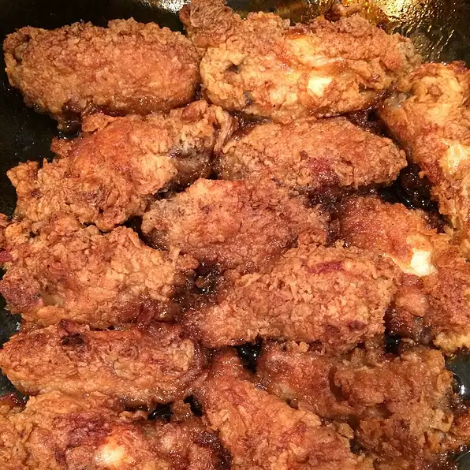

Baked Chicken Wings

Description
Baked chicken wings are so easy to make, and they come out of the oven
crispy and delicious. There's no need for flour
Simply bake them in a 400°F oven for 40 minutes. And if you want them
extra-crispy, leave them in a warm oven for 30-60 more minutes
Ingredients
- 3 pounds chicken wings
- 2 eggs, beaten
- ½ cup all-purpose flour for coating
- ¾ cup oil for frying
- ¼ cup margarine
Steps
- Preheat oven to 350 degrees F (175 degrees C).
- Pour egg beat into a shallow dish or bowl; do the same with the flour. Heat oil and margarine in a large, deep skillet over medium high heat. Dip wings in egg, then flour, then fry until browned and crisp. Lay browned wings in an 11x14 inch baking dish.
- To Make Sauce: In a small bowl combine the soy sauce, water, sugar, vinegar and MSG. Blend well and pour sauce over chicken.
- Bake in the preheated oven for 1 hour.